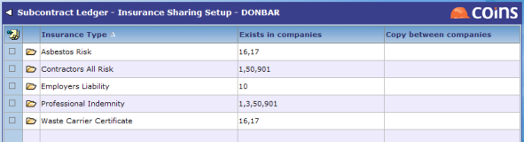
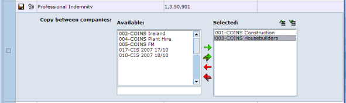

Sharing Across
If you operate multiple , updating the details for each subcontractor would be time-consuming. Sharing details across makes it easier to update subcontractor records. Not all subcontractor will be updated like this (some will be -specific), so there is a table of which SC are to be shared, and across which .
To specify which share :
- Go to Sharing Setup.
The Exists in field shows which each type has been set up in.

- To share a between , update the line and select the in which the is shared.

You can also specify which a is shared across, by updating it in .
When you update the details of a subcontractor's (using the tab in Subcontractor Maintenance) in any of the across which the is shared, updates the details for that subcontractor in the other .